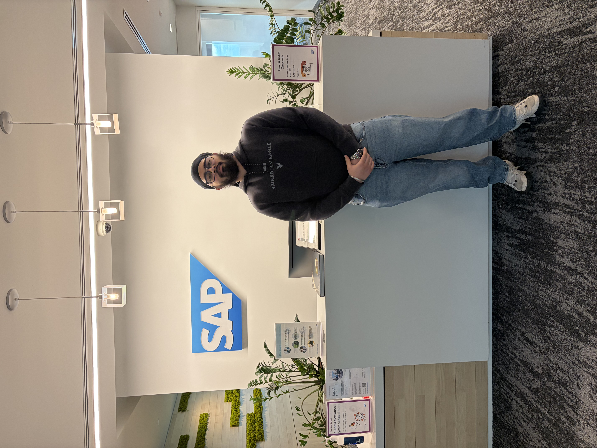

Four months inside SAP Canada's Hana Data Lake (HDL) Services team building resilience, enforcing security compliance, and keeping production clusters

SAP is a global enterprise software powerhouse trusted by over 400,000 customers worldwide and built on a workforce of more than 100,000 people. Originally renowned for enterprise resource planning (ERP), SAP has evolved into a full-stack cloud company — spanning databases, analytics, intelligent technologies, and experience management.
The Waterloo office is one of SAP's key Canadian engineering hubs, with deep roots in the local tech ecosystem. My team, HDL Services (Hana Data Lake), sits within SAP's Database and Data Analytics division — responsible for keeping cloud-hosted database instances running at planetary scale, across thousands of machines in data centres on AWS, Azure, and GCP.
What makes SAP distinct from many tech companies is its engineering rigour around reliability: the systems we maintain power some of the world's largest enterprises, so zero-downtime deployments and bullet-proof security compliance aren't goals they're requirements.
Spent the first weeks mapping the entire HDL Services architecture — understanding how the Kubernetes Operator Pattern and Custom Resources orchestrate database instances, how storage solutions span multiple clusters, and how microservices communicate end to end.
Identified a missing security configuration in our component that would cause compliance checks to fail across all production and canary clusters. Reverse-engineered how the Kubernetes Operator dynamically created resources, then rolled out the fix with zero downtime and no service disruptions.
Led verification and testing for a critical data resilience feature — centred around preventing and recovering from accidental database deletion. Designed test scenarios, validated recovery paths, and confirmed the feature met production-grade reliability requirements.
My primary technical goal was to develop a solid, hands-on understanding of deploying, managing, and troubleshooting database services across multi-cluster Kubernetes environments specifically within SAP's cloud-native setup.
"Understand & document SAP's multi-cluster K8s architecture, storage solutions, and how database services operate across clusters. Deploy & troubleshoot a database service in the dev environment, then apply those skills to manage real production workloads."
✓ Achieved. Beyond just learning the architecture, I got deep into the Kubernetes Operator Pattern and Custom Resources, concepts I hadn't encountered before and applied that knowledge directly to the security compliance project, where understanding how the Operator dynamically created resources was the key to shipping a correct fix without downtime.
I wanted to become measurably more effective at getting things done — prioritising high-impact work, tracking time honestly, and consistently meeting commitments without burning bandwidth on low-value activity.
"Implement time-tracking tools, prioritise tasks using task management systems, and practice focusing on high-impact activities — measured by consistently meeting deadlines and positive feedback from supervisors."
✓ Achieved. Working on production-critical tasks with real consequences forced a genuine discipline upgrade. I learned quickly that on a team where an outage means thousands of affected customers, prioritising correctly and communicating blockers early aren't soft skills they're engineering skills.
I set out to improve my spoken communication in professional engineering contexts getting comfortable with technical vocabulary, asking better questions, and holding my own in conversations with senior engineers and my manager.
"Observe successful communication patterns, engage actively with managers and team members, and get comfortable using technical terminology accurately measured by positive feedback from my manager."
✓ Achieved. The security compliance task in particular required presenting my analysis, walking senior engineers through my findings, and defending my proposed fix. That experience more than anything solidified my confidence in technical discussions. By the end of the term, conversations that felt intimidating in week one felt natural.
Walking into SAP, I understood cloud computing as a concept. Leaving, I understand it as a practice a discipline with real consequences. When the system you're changing runs across dozens of production and canary clusters, every decision carries weight.
The most surprising lesson was how central systems thinking is to cloud engineering. Before I could fix anything, I had to understand everything how the Operator created resources dynamically, how compliance checks propagated, what a rollout failure would look like in Grafana. Speed comes from depth of understanding, not shortcuts.
This co-op term was the kind of experience that resets your benchmark. Working on live production systems with real users, real consequences, and a team that treated me as a genuine contributor pushed my technical skills and professional maturity further than any classroom or personal project could.
I arrived wanting to learn Kubernetes. I left having used it in anger: diagnosing live issues, planning compliance remediations, and shipping changes carefully across a global fleet of clusters. The skills I built here cloud-native architecture understanding, security thinking, reliable delivery under pressure are ones I'll carry into every future work term and beyond.
If there's one sentence I'd want a reader to take away: this term made me a better engineer, not just a more experienced one.
Thank you to my manager and the entire HDL Services team at SAP Waterloo for their mentorship, patience, and for trusting me with meaningful, real-world work from day one. Your willingness to answer questions made all the difference.